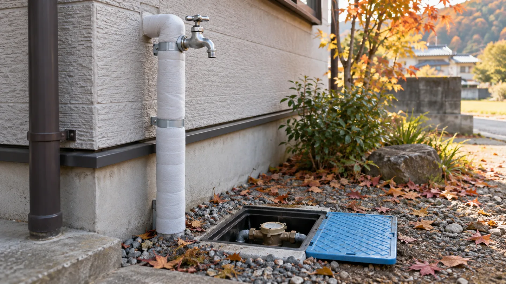
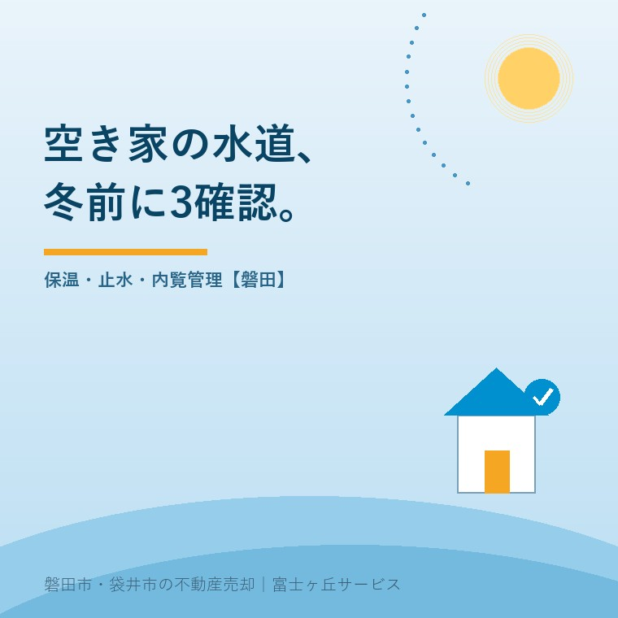

空き家の水道管凍結、磐田で秋に備える3点

2026年10月4日｜カテゴリ：空き家・施設入居

この記事の要点
親の実家が空き家に。冬までに水道をどうしておけばいい？
空き家の凍結対策は、露出配管の保温、止水栓の確認、内覧後の通水管理を秋に決めます。止水だけで配管内の水が抜けるわけではなく、設備ごとの対応は工事事業者に確認します。磐田市・袋井市・森町では、介護施設の運営から不動産事業を始めた富士ヶ丘サービスのような地域密着の会社に相談する選択肢があります。
大石浩之（磐田市／不動産業）です。親が施設に入居し、実家で水を使う人がいなくなった。売却を決めていなくても、冬を迎える準備は別に進められます。今回は庭木や建物全体の管理ではなく、無人の家の配管を守る段取りに絞ります。
2026年10月4日に、磐田市の「水道管の凍結対策」を確認しました。10月に寒波が来るという予報の紹介ではありません。明るい時間に現地を回れる秋のうちに、家族と管理担当者が何を見るかを決めるための記事です。
磐田市の案内は、空き家にも止水を呼びかける
磐田市は、朝の冷え込みが厳しいときの目安をマイナス4℃以下としています。気温が上がらない日が続く場合も、水道管が凍結しやすいと説明しています。数字は注意する目安であり、それより暖かければ個々の配管が必ず安全という保証ではありません。
市の案内には、長期間留守にする人、空き家や空き部屋を持つ人への項目があります。露出した水道管や温水器の配管の凍結・破裂に備え、止水栓を閉めるなどの対応を求めています。水を使わない家も、給水の管理が不要になるわけではありません。
意外に見落とされるのは、壊れる瞬間より、その後に誰も気づかない時間です。市は、空き家で漏水が長期間続き、水道料金が高額になるおそれも示しています。人が住む家の「水が出ない」という気づきが、無人の家では得られません。
私は、磐田市が空き家を名指ししている点を評価します。暮らしている人向けの注意だけでは、施設にいる親と別の家で暮らす子の間に、管理の空白ができます。所有者が現地にいなくても、確認する理由を家族で共有できる案内です。
その上で、私は「止水しておいてください」という連絡だけでは足りないと考えます。止水栓の場所を知らない人には、作業を頼めません。誰が行き、どこを操作し、終わった状態を誰に伝えるのか。家一軒の段取りへ落とす必要があります。
1．北側・屋外・給湯機まわりの保温を確かめる
冬前の最初の確認は、屋外で風が直接当たる配管、北側の日陰、保護カバーが外れた配管です。磐田市は給湯機の配管も注意箇所に挙げています。玄関までの通路だけを見て帰らず、建物の裏側に回れる範囲も確かめます。
市が示す方法は、配管を保温材などで覆い、濡れないようにすることです。見た目だけ巻かれていても、外れている部分や濡れた部分がないかを見ます。高い場所や狭い場所に無理に入らず、手が届かない箇所は写真と位置を工事事業者へ伝えます。
| 見る場所 | 秋に確かめること | 家族に残す記録 |
|---|---|---|
| 北側・屋外の配管 | 露出、保温材の外れや濡れ | 位置が分かる全景と近接写真 |
| 給湯機まわり | 配管カバーと機種別の対処 | 機種名・説明書の所在 |
| メーターボックス | 保温と検針のしやすさ | 箱の場所とふたを閉じた状態 |
メーターボックスについては、保温材を濡れないよう袋に入れる方法を市が案内しています。ただし、検針できる状態を保つことが条件です。メーターを探せなくなるほど物を詰めたり、開閉を妨げたりする仕上げにはしません。
給湯機は配管だけ見て、電源や水抜きを一律に決めないようにします。機種に合った凍結予防の手順は説明書やメーカー、工事事業者への確認が必要です。私は、空き家だから電気も水も全部同時に止めればよい、という案内はしません。
管理を外部へ頼むなら、空き家管理サービスの契約前の5確認と合わせて作業範囲を整理します。巡回という言葉だけでは、配管の保温確認や止水操作まで依頼したことになるとは限りません。修理手配の連絡経路も書面に残します。
2．止水栓の場所と、操作できる人を決める
止水栓は、宅地内への水を止めるための設備です。磐田市はメーターボックス内や道路付近を場所の例として示しています。家ごとに配置を確認し、敷地のどの方向にあるかが分かる写真を家族で共有するのが私の提案です。
ふたを開けた写真だけでは、初めて来る担当者が箱を見つけられません。門、駐車場所、建物などとの位置関係も撮ります。写真は家族や依頼した管理担当者に限って共有し、鍵や設備の情報を誰でも見られる場所へ公開しないようにします。
固くて動かない、どれが自宅の止水栓か分からない、古い配管に不安がある。こうした場合は、無理に力をかけず工事事業者へ確認します。操作できたか曖昧なまま「閉めた」と報告するより、「未確認」と残した方が次の人が動けます。
止水と水抜きは別の作業です。元を閉めても、設備の中の水が自動的にすべて抜けるわけではありません。止水だけで凍結を完全に防げるとは考えず、その家に必要な保温や水抜きを相談します。設備の構成を確認せず、水抜きの順番をここで一律には指定できません。
家族の記録には、実施日、担当者、止水の状態、次に水を使う予定を書きます。止水栓の確認と水道契約の休止手続きも同じ意味ではありません。料金や再使用の手続きまで決める場合は、市の窓口に条件を確かめてから進めます。
3．磐田の実家は、内覧の通水と退去確認を一組に
磐田市の空き家で内覧を予定する場合は、通水する人と、退去時に止水状態を確認する人を一組で決めるのが私の案内です。ここからは市の指定手順ではなく、売主と仲介会社の行き違いを減らすための実務上の提案です。
私はこう考えます。売るかどうかは決めなくていい。水を誰が止めるかは決めておく。親の施設生活が落ち着くまで家の結論を待つことと、設備の担当を空白にすることは別です。売却の相談を受ける側として、価格の前にこの空白を埋めたいのです。
例えば内覧予定表を作るなら、私は「水を使うか」「誰が開けるか」「誰が戻すか」の3欄を足します。これは実際の相談事例の紹介ではなく、私ならこう準備するという提案です。掃除で使った日も同じ欄へ記録し、家族と仲介会社で最終状態を共有します。
迷うのは、清掃や設備確認のための通水と、不在中の止水をどう両立させるかです。開閉の回数を増やすほど丁寧になるとは限りません。現地に行く予定をまとめ、設備の状態を知る人が担当する。家族の移動負担も含めて続けられる方法を選びます。
内覧担当者には、止水中であることと、未確認の設備を事前に伝えます。水が出ない状態を設備故障と決めつけたり、通水しただけで漏水がないと保証したりしません。確認できた範囲と、工事事業者の点検が必要な範囲を分けて買主へ説明します。
退去時の報告は、空き家の鍵管理と内覧後の施錠確認に水道の欄を加えると整理しやすくなります。鍵を返したから、水の確認も済んでいるはずだ。そんな推測をなくすための記録です。
破裂時の連絡先と費用の確認を残す
水道管が破裂したとき、磐田市は止水栓を閉め、指定給水装置工事事業者へ修理を依頼するよう案内しています。宅地内の給水装置の修理費は所有者負担です。漏水料金には減免対象となる場合がありますが、修理代まで市が負担するという意味ではありません。
凍結して水が出ない場合、市は蛇口を閉めて自然に溶けるのを待つことなどを案内しています。熱湯を直接かけると破裂のおそれがあります。留守宅で出ない蛇口を開けたまま帰らず、状態が分からなければ修理先へ相談してください。
私は、所有者の連絡先、現地へ行ける人、修理を相談する事業者を一枚にまとめるよう提案します。発見した人に工事代の判断まで背負わせず、応急対応と修理の承認を誰へ求めるかも決めます。市の指定事業者一覧は、末尾の公式案内から確認できます。
- 北側と屋外の配管を撮り、保温の状態を確認する。
- 止水栓の場所と操作担当を共有する。
- 内覧・清掃の後の状態と、修理の連絡先を残す。
家を持ち続けるか迷う段階なら、施設入居後の実家をどう考えるかも判断材料になります。富士ヶ丘サービスは介護と不動産を一体で相談し、磐田・袋井の家族が困らない売却を支援します。私は、売却の結論より先に無人期間の管理を整えるよう案内します。
よくある質問
空き家の水道管凍結、磐田で秋に備える3点について、判断前に確かめたい点を整理します。
- 止水栓を閉めれば、水道管は凍らなくなりますか？
- 止水は配管の保温や水抜きと同じ作業ではありません。磐田市は長期間留守にする家や空き家へ、止水栓を閉めるなどの対応を案内しています。配管内に水が残る設備もあるため、止水だけで凍結を防げると決めつけず、保温の状態と必要な水抜きを指定給水装置工事事業者へ確認してください。給湯機は機種の説明書も確認します。
- 売却の内覧がある日は水道を開けてよいですか？
- 水を使う予定があるなら、所有者と仲介会社で通水の担当と範囲を先に決めます。止水中であること、給湯機の扱い、退去時に戻す状態を共有し、終了後に確認報告を残すのが私の提案です。凍結や漏水が疑われる場合は、案内の都合だけで通水せず、工事事業者に状態を確認してもらいます。未確認の設備は未確認と伝えます。
- 凍結で漏れた水の料金は、必ず減額されますか？
- 磐田市は、寒波などの漏水でも料金の減免対象となる場合があると案内しています。自動的な減額や修理代の補償ではありません。宅地内の給水装置の修理費は所有者負担です。破損箇所、発見日、修理内容を整理し、減免の条件と必要書類を上下水道料金センターへ確認します。先に減免を見込んで修理費を判断しないことです。

この記事を書いた人：大石浩之（磐田市／不動産業・宅地建物取引士）
富士ヶ丘サービス株式会社。介護施設の運営から不動産事業を始め、磐田市・袋井市・森町で、介護と相続、実家の売却を一体で相談できる窓口を設けています。家族が困らない売却のため、資料と現地の条件を一件ずつ整理します。著者プロフィール
本記事は2026年10月4日時点の公開情報と筆者の意見です。制度・数値・手続き・契約条件は変更されることがあります。税務・登記・相続・重要事項説明・契約などの個別判断は、税理士・司法書士・弁護士などの専門家に確認を。